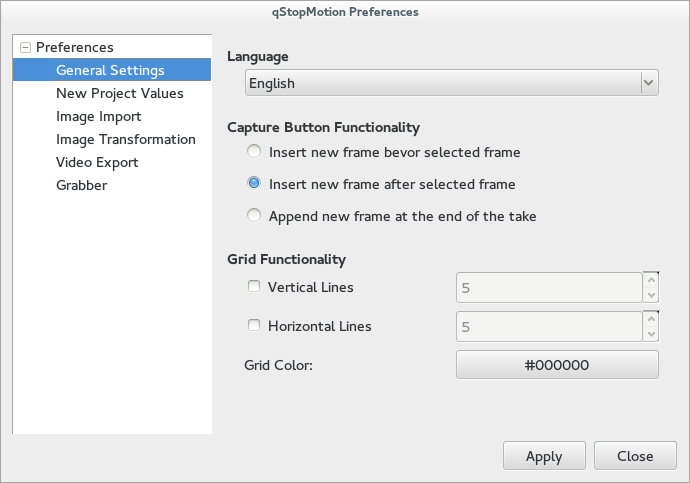
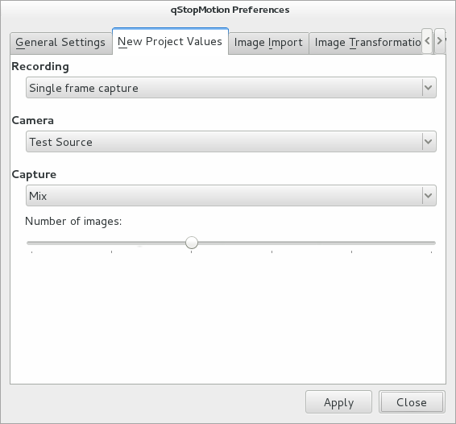
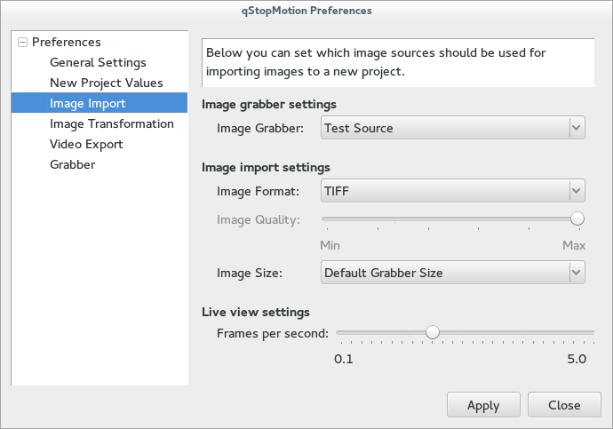
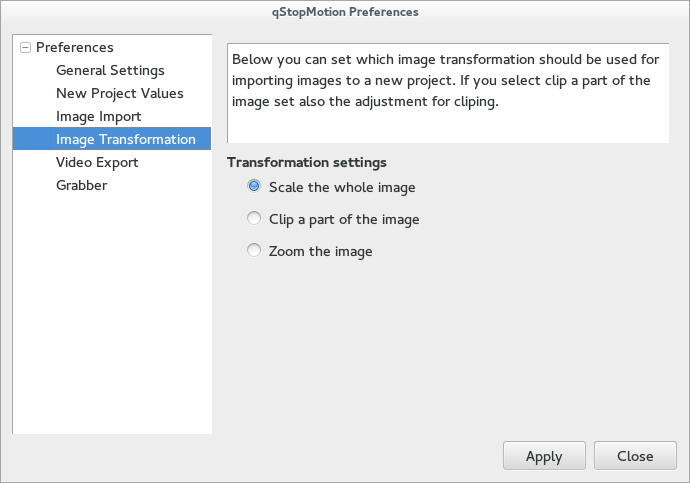
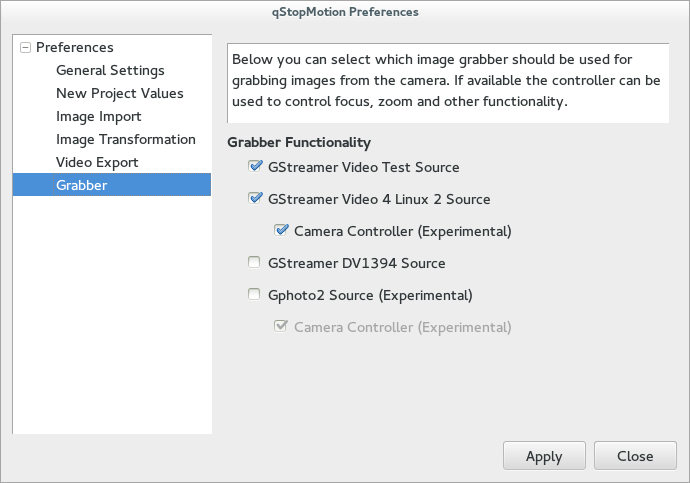
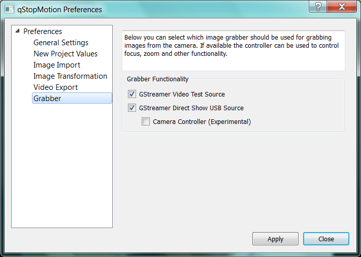

10 Description of the qStopMotion preferences.
Xxx.
10.1. Genereal settings
Xxx
Figure 10.1 The general settings

Xxx
10.2. New project values
Xxx
Figure 10.2 The new project values

Xxx
10.3. Image Import
If the image importing doesn't work or if you want other settings you can change the way images are imported in qStopMotion.
This is done through the configure menu (-> (Ctrl-P)) and you can either choose from one of the predefined settings or create your own.
Figure 10.3 The image import preferences

Image importing in qStopMotion works by continously asking an external program to grab a picture from the camera and place it in the .stopmotion directory. qStopMotion then displays this picture, and when this is done continously you get live video.
If you want to add a new import program you can do this by pressing the button. A new row appears in the table and you can fill in a name for your setting and a short description.
You then have to specify the command line options to import pictures. These can be set by selecting your setting and pressing the button.
There are three things which can be specified here. The prepoll, start deamon and stop deamon fields. If the program for importing the images grabs one image and then exits you can leave the start and stop deamon fields blank. The contents of the prepoll field is a command which is run before importing a picture. If the import program is running in the foreground this will typically be the command line for grabbing the picture. Note that you have to write (DEFAULTPATH) in the command line on the place you otherwise would have speciefied the path to the file where the image should be stord. qStopMotion will replace this tag with the correct path and file name.
If the program you use for importing the pictures is running as a background/deamon process you have to specify command lines for starting and stoping the deamon. Again you should use the $importpath tag instead of the path to the file (se above). Prepoll could still be used but is not required. One potential use for the prepoll command when the grab program is running as a deamon process is to specify a command line which performes a operation such as scaling or rotating the picture. This command will be called on the pictures every time before importing them meaning the live video will be displayed with the effect.
10.4. Image transformation
Xxx
Figure 10.4 The image transformation preferences

Xxx
10.5. Video export
Xxx
Figure 10.5 The video export preferences

Xxx
10.6. Grabber
Xxx
Figure 10.6.1 The grabber preferences on Linux plattform

Xxx
Figure 10.6.2 The grabber preferences on Windows plattform

Xxx